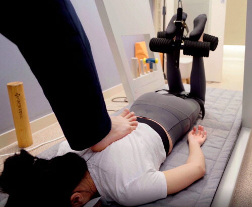

추나요법 (Chuna Manual Therapy)
이동해 원장의 고견: 추나요법은 단순히 뼈를 맞추는 소리에 집중하는 것이 아닙니다. 인체의 비대칭을 바로잡고, 공간(Space)을 확보하여 신경과 혈관의 흐름을 정상화하는 정밀한 수기 치료입니다.
추나요법은 한의사가 손이나 신체 일부분, 혹은 추나 테이블을 활용하여 환자의 골격과 근육에 자극을 주어 구조적·기능적 문제를 해결하는 치료법입니다. 수원 바디올한의원은 건강보험이 적용되는 표준화된 추나 서비스를 제공합니다.
추나요법의 종류와 효과
- 단순추나: 근육과 근막을 이완하여 통증을 완화하고 순환을 돕습니다.
- 복잡추나: 틀어진 뼈 분절을 직접 교정하여 신경 압박을 해소합니다.
- 특수추나: 탈구된 관절을 정상 위치로 되돌리는 고난도 교정입니다.

바디올한의원 이동해 원장의 추나 시술: 골반과 요추의 정렬을 바로잡습니다.
왜 바디올의 추나인가?
수원 인계동 바디올한의원의 추나는 공간척추교정(SART) 노하우와 결합되어 시너지를 냅니다. 일반적인 추나보다 더 깊은 층의 공간 확보를 목표로 하여 치료의 유지력이 우수합니다.
 첨단 추나 테이블과 인상기가 구비된 전문 치료 공간입니다.
첨단 추나 테이블과 인상기가 구비된 전문 치료 공간입니다.
추나요법 건강보험 혜택 및 비용 확인하기 →
Chuna Manual Therapy
Director Lee's Insight: Chuna is about restoring balance and creating 'Space' for the nervous system to function optimally.
Body-all Clinic Suwon offers health-insured Chuna therapy for spinal alignment and chronic pain relief.
推拿疗法 (Chuna Manual Therapy)
李东海院长的观点: 推拿不仅是缓解肌肉疲劳，更是通过物理方式恢复脊柱间隙，解除身体压迫。
水原Body-all韩医院提供纳入韩国国民健康保险的专业推拿矫正服务。